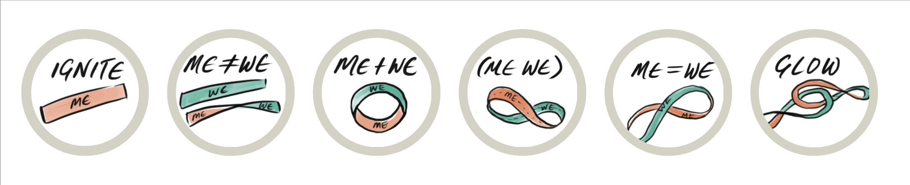

Research
In practice
Every studio is an experiment
The six-stage Loop tested against real rooms, then adjusted from what we observe.
They Never Were. One path. No sides.
MEWE names a pattern already at work — between us, within us, through us. Not a belief to adopt. Something to notice, and then to live.
It is natural to feel separate at times. In teams, when collaboration feels strained. In families, when misunderstanding lingers. In communities, when alignment feels fragile. Even within ourselves. Given the complexity of modern life, this sense of separation makes sense.
And yet, something else is also quietly true — we are constantly influencing one another. A tone changes the atmosphere. A gesture softens tension. A single decision reshapes a conversation.
It draws attention to a pattern we have had blind spots for — one that living systems have been running all along.
Strands appear separate, yet neither sustains life alone.
Signals travel a shared network, not a solitary line.
Trees trade nutrients underground long before we noticed.
Thrive through interdependence, not isolation.
This isn't a new idea. Nature has always shown it to us.
We picture “self” and “society” as two sides, facing away from each other. MEWE is the flip — the moment you let go of the orientation you started with, and see they were never fully separate.
If this pattern is already operating, what changes when we become conscious of it? MEWE unfolds through practice — not as a theory, but as something lived, across six stages.

Community transformation is not manufactured — it unfolds through participation. Change is rarely sustained through force. It emerges through relational alignment.
MEWE is a working hypothesis, refined through every workshop, project, and neighbor story — evidence about what actually shifts between people, gathered as we practice.
The six-stage Loop tested against real rooms, then adjusted from what we observe.
Relational science, systems thinking, art, and ecology — not a single discipline's claim.
What each IN-Collective learns returns to the network, so the framework grows through many hands.
Shared through peer-reviewed work and international forums: a Springer handbook chapter, “Self, Society, Service in MEWE” (2024); “Co-Designing a Pathway Through Food Revolution for Social Change” (2021); “Co-designing a social innovation model for changemakers” (2018); and a youth-empowerment case study (Banff / RSD, 2015). Presented at Dubai EXPO 2020 and the Parliament of the World's Religions 2022. Read the full research →
Something we've been testing since 2015 — our workshops exist to practice it together. We're also gathering a neighbor archive: how people express their own MEWE story, in whatever form it takes.
MEWE emerged from a personal need — guiding design students through self-discovery, and connecting their practice to a larger purpose.
The Möbius strip became its symbol: individual (ME) and community (WE) as one continuous surface. From that starting point, the framework opens an exploration of our relationships with the self, with others, and with the forces of energy that bind us all.
Its simplicity and adaptability keep it accessible across age groups and cultural backgrounds.